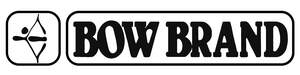

Trade Mark Journal No.2025/029 18 July 2025
UK00004230618 8 July 2025 (28)

- Class 28
- Sports equipment; Tennis uprights [sports equipment]; Sporting articles and equipment; Badminton equipment; Bags specially adapted for sports equipment; Balls for sports; Sports balls; Strings for rackets; Rackets (Strings for -); Tennis racket strings; Racketball racket strings; Squash racket strings; Racquet strings; Strings for tennis rackets; Strings for racquets; Strings for badminton rackets; Strings for squash rackets; Synthetic strings for use with rackets; Strings for tennis racquets; Tennis racquet strings; Natural gut strings for tennis rackets; Natural gut strings for squash rackets; Natural gut strings for tennis racquets; Rackets; Racket grip tape; Racket grip tapes; Vibration dampeners for tennis rackets; Tennis racket presses; String materials for sporting racquets; Gut for tennis rackets; Balls for racket sports; Racket cases; Badminton rackets; Tennis racket covers; Racket cases [for tennis or badminton]; Tennis rackets; Rackets [for tennis]; Gut for rackets; Grip bands for badminton rackets; Squash racket covers; Grip bands for tennis rackets; Grip bands for squash rackets; Tennis bags shaped to contain a racket; Squash rackets; Racket covers; Guts for rackets; Grips for rackets; Racketball rackets; Tapes for rackets; Guts for rackets [for tennis or badminton]; Racquets; Grip tape for racquets; Tapes for wrapping tennis racquet handle grips; Tapes with weights for balancing tennis racquets; Head covers for squash rackets; Lawn tennis rackets; Badminton racquets; Tennis racquets; Covers (Shaped -) for badminton rackets; Gut for racquets; Shaped covers for tennis rackets; Shaped covers for racketball rackets; Shaped covers for squash rackets; Racquet ball gloves; Lawn tennis racquets; Grip bands for table tennis bats; Covers (Shaped -) for squash racquets; Tennis balls; Cases for tennis balls.
BOW BRAND INTERNATIONAL LTD